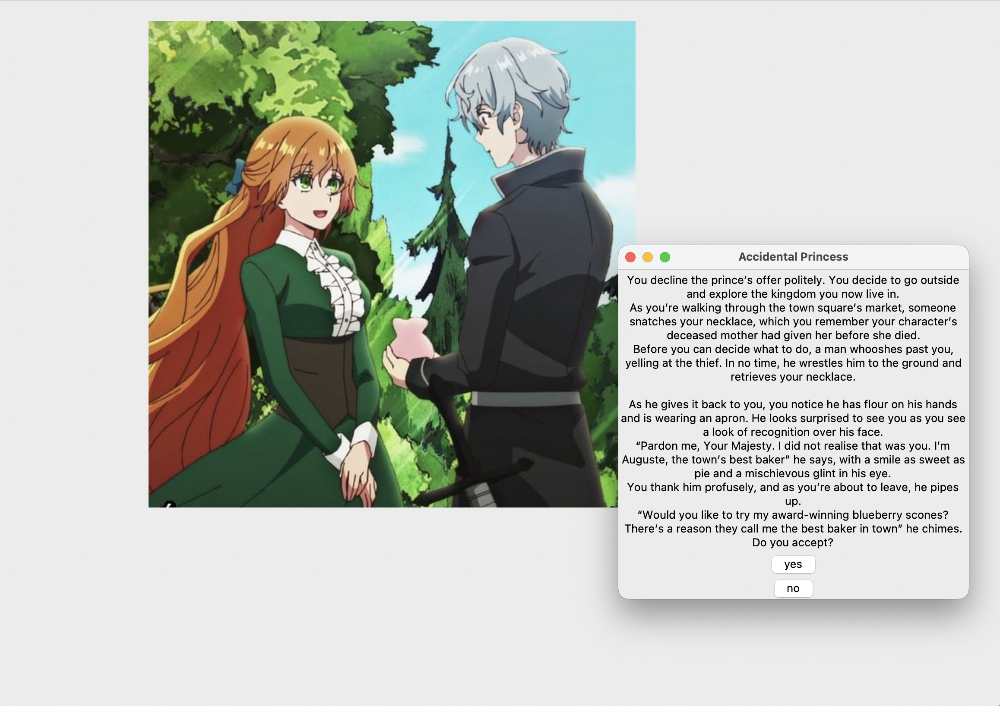
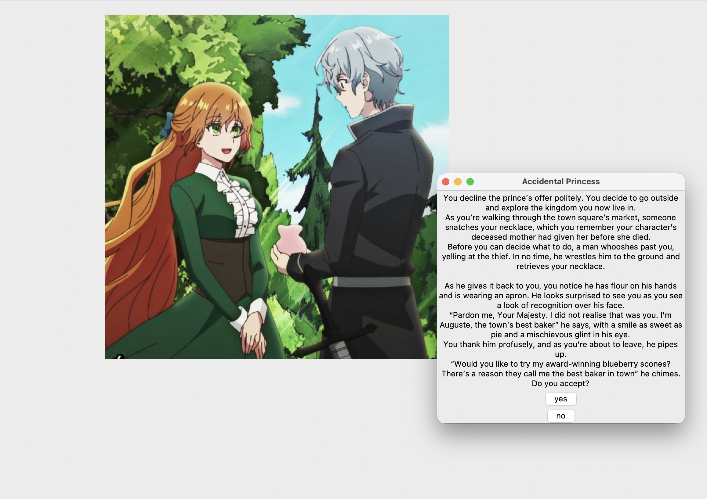

I’m a student in NYC at Eugene Lang and am interested in all things writing, art and coding! I love spending my time reading, learning how to code and hanging out with my three cats (Luke, Lionel and Autumn!).
This zine was a part of my Capstone project, and chronicled my journey of tracing my connection from my new home in New york to my home in Mumbai, India to my Dad's website. It was my attempt to understand the physicality of the internet, while also tying it to the personal. Please click fullscreen!


These posters functioned as easy-to-understand and accesible supplements to my zine.

Web Design for The New School Free Press

Article Page Design

Fashion on Fifth Logo — NYC

Fashion on Fifth Logo — Paris

Stamp Logo — Paris
A data visualization and research project chronicling the rise of Internet Shutdowns since 2014, as a tool to squash dissent.
 



Accidental Princess
This is my most personal project, a zine that delves into my roots as a South Asian woman and explores themes of generational trauma that many Desi women carry.